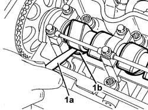

1036H14 valve tappets - check clearance
- Path
- Procedures > 10 ENGINE > 1036 TIMING SYSTEM > 1036H tappets and rocker shafts > 1036H14 valve tappets - check clearance
- Kind
- repair procedure (removal / refitting; the operation number is the code)
- Applies to
- engines: 1.9 JTD 8V; all production periods
- Interactive page
- https://sloeber94.github.io/elrnDB-a147/en/#/3025011
Applies to: engines: 1.9 JTD 8V; all production periods
1016A10 sound-proofing cover - r + r
1016A20 single cam cover - r + r and replace gasket
7055B64 Engine compartment DUST shield in front wheel arch (one), left or right - R.R.
1. Using a feeler gauge (1a), measure the clearance (1b) between the camshaft lift and the tappet shim.
Turn the camshaft and check the gap on all tappets.
 | Measurement | Value | |
|---|---|---|---|
- | Clearance with valve in closed position (mm) | Exhaust | 0.30 - 0.40 |
Inlet | 0.25 - 0.35 | ||

Applies to: engines: 1.9 JTD 8V; all production periods
7055B64 Engine compartment DUST shield in front wheel arch (one), left or right - R.R.
Topics linked from this page (4)
- 1016A10 sound-proofing cover - r + r
- 1016A20 single cam cover - r + r and replace gasket
- 4450B04 right front wheel r r
- 7055B64 Engine compartment DUST shield in front wheel arch (one), left or right - R.R.